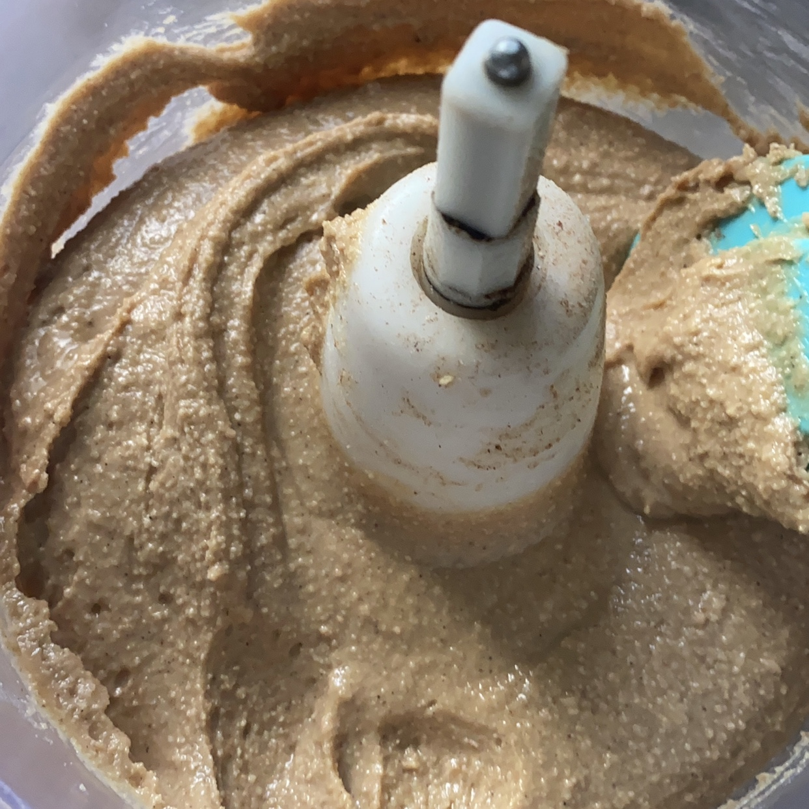

Peanut Butter
- 1 Large Bag Raw Unsalted Peanuts (about 5 cups)
Ingredients
- Preheat the oven to 350°F (177°C)
- Place the peanuts on a large tray, and once the oven is hot, place them in the oven for 15-20 minutes or until they have turned golden
- Transfer the peanuts carefully into a food processor and start blending on high speed.
- Stop occasionally to clean the borders of the processor
- Nuts take time to release their own oils, so pay attention to when the mixture starts to blend and become butter.
- Once the desired consistency is achieved, transfer your butter into a container with lid and don’t cover until the mixture is cooled
- Store in the fridge
Preparation